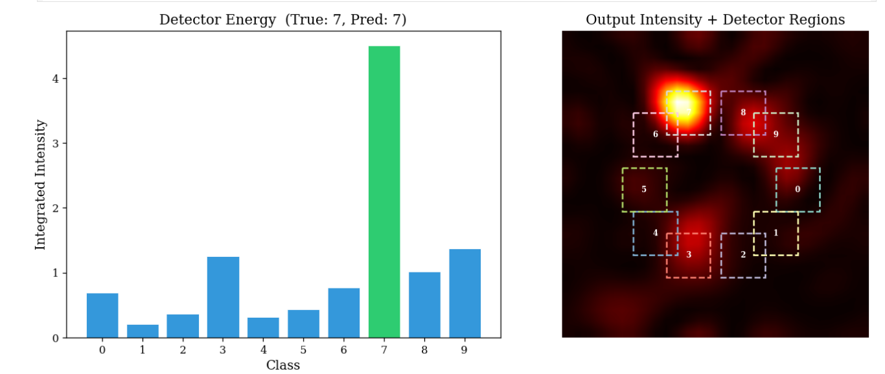

D2NN simulation
d2nn_simulation.jpgNoise-Robust Diffractive Optical Neural Networks
Built a differentiable simulator for multi-layer D²NNs using the Band-Limited Angular Spectrum Method. I used it to study how alignment errors, surface variations and sensor noise affect the system.
Find it on GitHub ↗